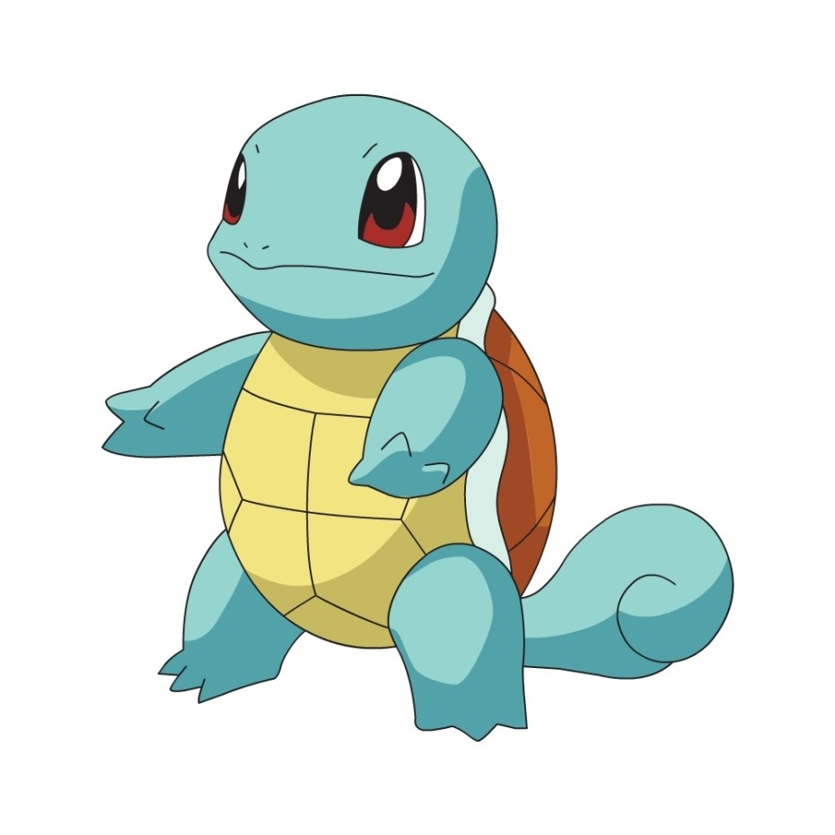

- 피카츄
- 파이리
- 꼬부기
Squirtle
주인공 지우의 포켓몬. 원래 트레이너에게 버려진 꼬부기들이 모여 결성된 비행 집단, '꼬부기단'의 대장이였지만, 자신을 로켓단의 공격으로부터 지켜준 지우를 뒤따르게 된다. 밝은 성격으로 꼬부기단을 인솔하고 있던 경험이 있어 리더십을 보일 때도 있다. 꼬부기단 시절에 썼던 선글라스는 등껍질 안에 숨겨져있다.
후에, 마음을 고쳐 소방단의 일원이 된 꼬부기단의 동료들과 재회, 지우의 꼬부기도 소방단에 입단하게 된다. 성도리그 예선에서 킹크랩이 부상당했을 때 나타나 위기의 상황을 극복한 적도 있다. 《포켓몬스터 AG》에서는 배틀 피라미드 공략 때, 지우의 이상해씨와 리자몽과 함께 불려나왔다. 진다이(국칭:기선)와의 배틀에서는 아이스크의 민첩함에 농락 당하면서도 「로케트 박치기」로 아이스크를 격파하지만, 다음의 상대 솔록에게 「솔라빔」을 맞고 쓰러진다.

지우의 라이벌인 오바람도 최초의 포켓몬으로 꼬부기를 선택해서 여행을 떠났었다. 지우도 최초의 포켓몬으로 꼬부기를 선택할 생각이었지만 그 날, 늦잠을 잤기 때문에 선택할 수 없었다. 또, 봄이도 암컷 꼬부기를 가지고 있다. 봄이가 오박사의 연구소에서 받았을 때 처음에는 겁이 많은 성격이었지만 성격도 개선되어 콘테스트에서도 활약하게 된다.
단편 애니메이션 《포켓몬 불가사의 던전 출동 포켓몬 구조대 파이팅즈!》에서는 주인공으로, 인간의 소년이 꼬부기가 되어 포켓몬의 세계에서 구조대 '파이팅즈'의 멤버로 활약한다.
《포켓몬스터 디 오리진》에서 그린이 선택한 포켓몬으로 등장한다. 그린이 챔피언으로 등극한 후에는 어니부기를 거쳐 거북왕까지 최종진화를 한 상태였다. 그러나 레드의 리자몽에 불대문자를 맞고 쓰러지고 만다.